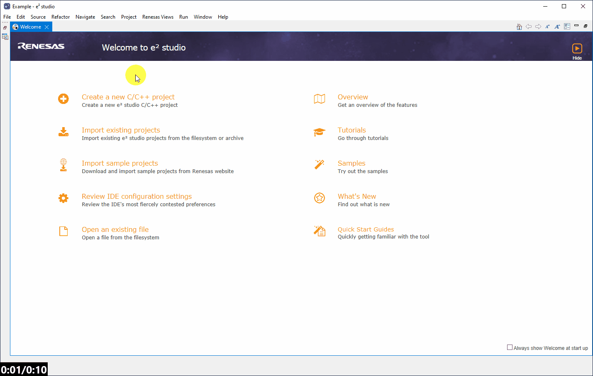
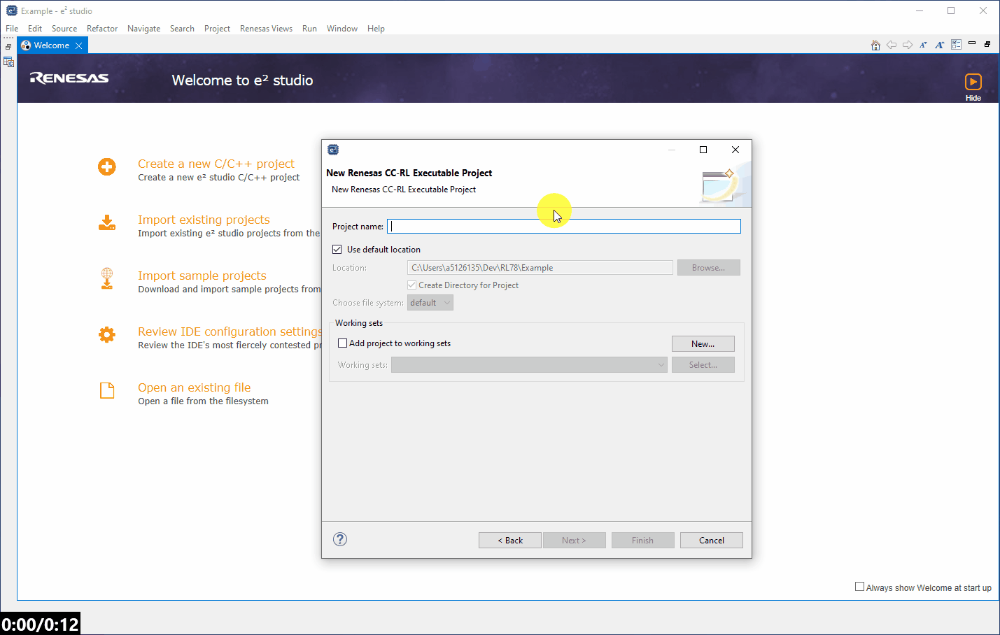

Here we will guide you through creating an empty project for the RL78/G23 - specifically we will target the RL78/G23 128p FPB device R7F100GSN.
We can do this in two ways - either using the Welcome Pge shortcut - or the conventional method through the File dropdown.
Here we will use the conventional method as this will most commonly be used during development, where the welcome page will not always be present.
[File] → [New] → [Renesas C/C++ Project] → [Renesas RL78]

The toolchain is another term for the group of tools used in the compilation and debug/binary manipulation of a program.
The differences in toolchains will not be covered here but a review of each toolchain is recommended before making a selection for your project.
Importantly though they will all provide the same base features of compilation and debug for the purpose of this lab.
An observant reader will notice that each toolchain comes in two forms, these are executable and library.
An executable project will be setup to generate binary/debug images (.elf/.mot/.bin etc.) which can be flashed to a device and executed (typical).
A library project will be setupto generate a static library (.lib/.a etc.) file which can be used/linked in other projects, no executable binary
will be generated in a libray project and therefore a library project can not be debugged directly.
Here we will select an executable project and arbitrarily select the Renesas CC-RL C/C++ toolchain. Then click Next >.

The project should be then given a sensible name. Then click Next >.

The project now needs some fine tuning. We should perform the following in the setup dialog:

Enable the use of the smart configurator - we will not cover this tool here in any detail barring its basic use to debug a project.
It should be sufficient to know that this tool allows us to configure the device and generate peripheral drivers and middleware.
Click Next > then click Finish.

During project creation the following dialogs may appear.
The security warning can be ignored and the user should select [Install anyway].
And for the "open the Smart Confgurator perspective" dialog the user should click [Open Perspective].
Opening this perspecitve just means e2studio will initially present the user with the smart configurator tool for
the project and in the format most suited to using this tool.

Initially you may be presented with the welcome screen, you can select Hide in the top right corner and the smart confgirator tool should appear.